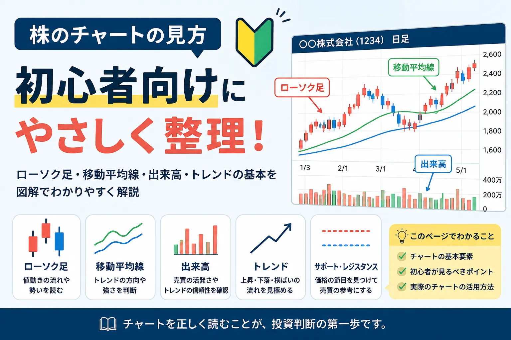
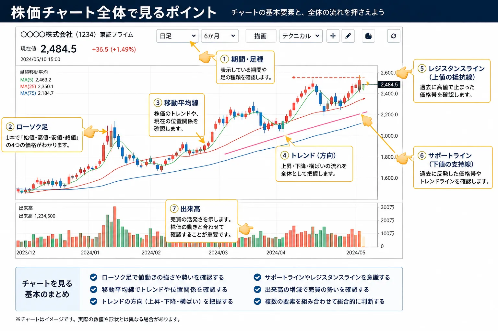
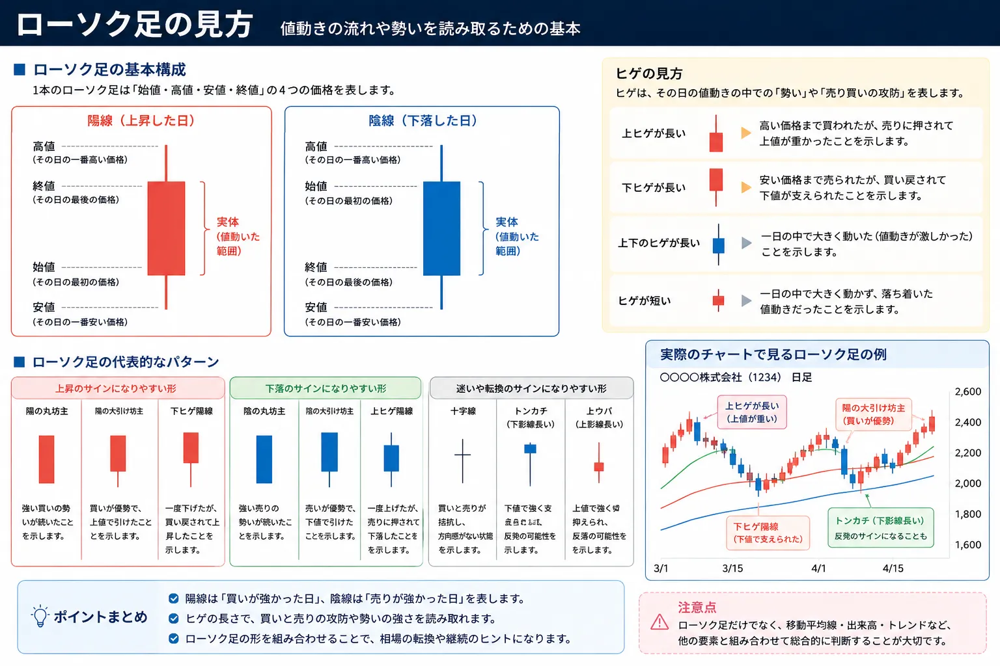
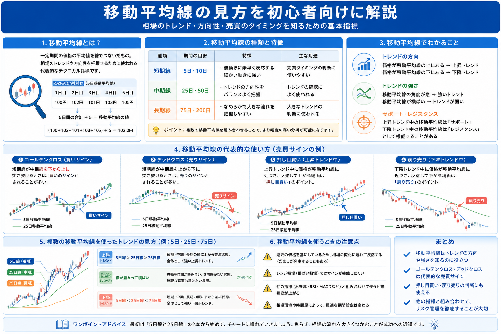
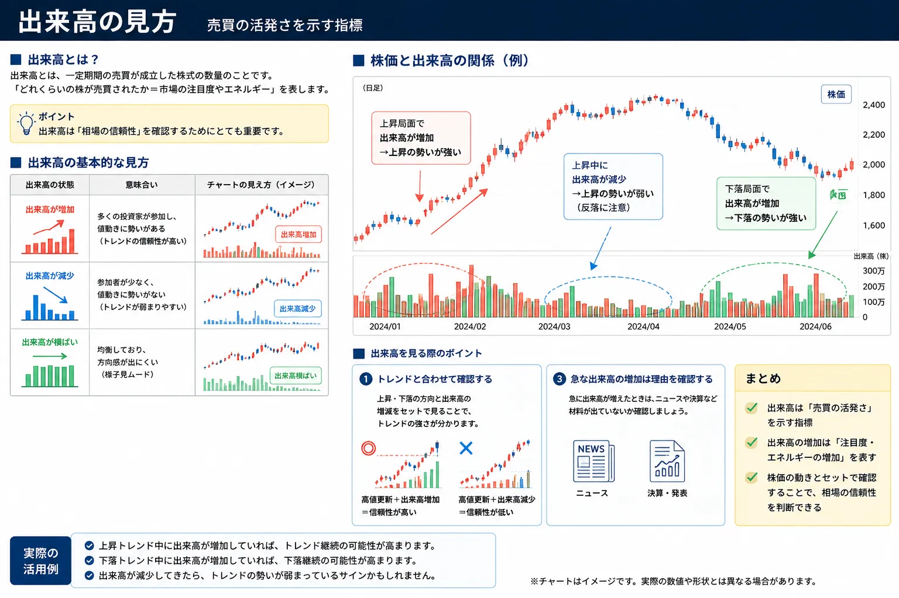
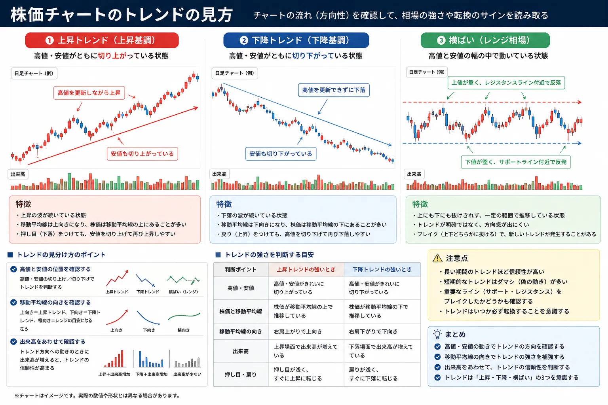
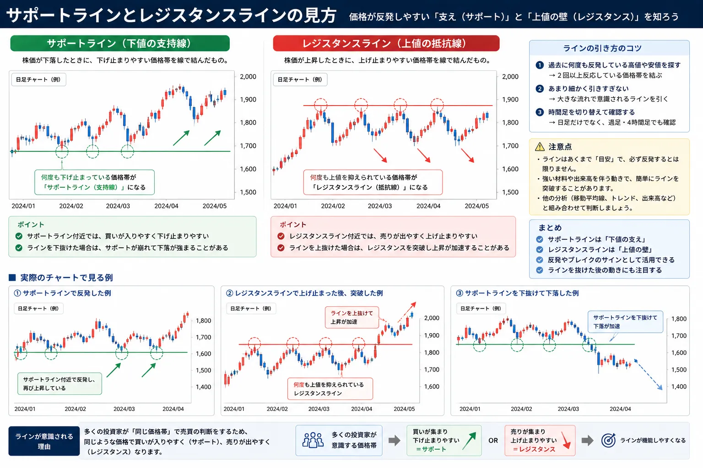

株のチャートの見方を初心者向けに解説｜ローソク足・移動平均線・出来高の基本
株のチャートは何を見るもの？最初に全体像を整理

- 株のチャートは、株価の動きを時系列で見るための図です
- 初心者は、ローソク足・移動平均線・出来高・トレンドから見ると整理しやすいです
- チャートだけで売買を決めるのではなく、業績やニュースもあわせて確認することが大切です
証券アプリや証券会社の画面を開くと、赤や青のローソク足、何本もの線、下に並んだ棒グラフのような表示が出てきます。
はじめて見ると「どこを見ればいいのか分からない」と感じやすいですが、最初からすべてを覚える必要はありません。
株のチャートは、細かく分析しようとすると奥が深い一方で、初心者が最初に押さえるべきポイントはかなり絞れます。
この記事では、株のチャートを見るときに大切な、ローソク足・移動平均線・出来高・トレンド・サポートライン・レジスタンスラインの基本を、初心者向けにやさしく整理します。
まずは全部ではなく「見る順番」を決める
チャートを見るときは、いきなり細かい形を覚えるよりも、株価が上向きなのか、下向きなのか、どの価格帯で止まりやすいのかを確認するところから始めると分かりやすいです。
そのため、初心者は「ローソク足を見る」「移動平均線を見る」「出来高を見る」「トレンドを見る」という順番で確認すると整理しやすくなります。
チャート全体でまず見るポイント

- ローソク足で、株価がどのように動いたかを見る
- 移動平均線で、大きな流れを見る
- 出来高で、売買の多さを見る
- 高値と安値の流れから、上昇・下降・横ばいを確認する
株のチャートは、いくつかの部品に分けて見ると分かりやすくなります。
まず中央に並んでいる赤や青の四角い形がローソク足です。これは、その期間に株価がどのように動いたかを表しています。
ローソク足の近くを通っている線は、移動平均線です。これは株価の平均的な流れを見るために使われます。
さらに、チャートの下に並んでいる棒グラフのようなものが出来高です。出来高は、どれくらい売買されたかを見るためのものです。
初心者は、まずこの3つを見分けられるようになるだけでも、チャート画面への苦手意識がかなり減ります。
ローソク足とは？株価の動きを一本で表すもの

- ローソク足は、一定期間の株価の動きを一本で表します
- 始値・終値・高値・安値を確認できます
- 陽線は上昇、陰線は下落を表すことが多いです
- ヒゲを見ると、その期間中の値動きの幅も分かります
ローソク足は、株のチャートで最も基本になる表示です。
1本のローソク足には、始値、終値、高値、安値という4つの情報が入っています。
始値は、その期間の最初についた価格です。終値は、その期間の最後についた価格です。
高値はその期間中に最も高くなった価格、安値は最も安くなった価格を表します。
一般的に、終値が始値より高い場合は陽線、終値が始値より低い場合は陰線として表示されます。
色は証券会社やチャート設定によって違う場合がありますが、意味としては「その期間で上がったのか、下がったのか」を見るものです。
ヒゲが長いと何が分かる？
ローソク足の上下に伸びる細い線をヒゲと呼びます。
上ヒゲが長い場合は、一度高くなったものの、最後は押し戻されたことを示します。
下ヒゲが長い場合は、一度安くなったものの、最後は買い戻されたことを示します。
ただし、ヒゲだけで今後の値動きを決めつけるのは注意が必要です。ローソク足は、他の情報と組み合わせて見ることで意味が分かりやすくなります。
移動平均線とは？株価の大きな流れを見る線

- 移動平均線は、一定期間の株価の平均をつないだ線です
- 短期線・中期線・長期線で、見る期間が変わります
- 株価が移動平均線の上にあるか下にあるかを見ると流れをつかみやすいです
- 線の向きが上向きか下向きかも重要です
移動平均線は、株価の平均値を線でつないだものです。
日々の株価は細かく上下しますが、移動平均線を見ることで、大きな流れを確認しやすくなります。
たとえば、5日移動平均線は短期の動き、25日移動平均線は中期の動き、75日移動平均線はもう少し長い期間の流れを見るときに使われることがあります。
実際の設定はチャート画面によって異なりますが、初心者はまず「短期・中期・長期の流れを見る線」と考えると分かりやすいです。
株価が線の上にあるか、下にあるかを見る
株価が移動平均線の上で推移している場合、比較的強い流れと見られることがあります。
反対に、株価が移動平均線の下で推移している場合、弱い流れと見られることがあります。
ただし、移動平均線も万能ではありません。短期的にはだましのような動きもあるため、出来高やトレンド、企業の材料もあわせて確認することが大切です。
出来高とは？どれくらい売買されたかを見るもの

- 出来高は、その株がどれくらい売買されたかを表します
- チャート下部の棒グラフとして表示されることが多いです
- 株価が大きく動いたときに出来高も増えているかを見ると参考になります
- 出来高が少ない銘柄は、売買が成立しにくい場合もあります
出来高とは、一定期間に売買された株数のことです。
チャートでは、ローソク足の下に棒グラフとして表示されることが多いです。
株価が上がっているときに出来高も増えている場合、その上昇に参加している人が多いと考えやすくなります。
反対に、株価が上がっていても出来高が少ない場合は、売買が少ない中で上がっているだけの可能性もあります。
出来高は、値動きの勢いを見るための補助情報として役立ちます。
トレンドとは？株価の方向を見る考え方

- トレンドとは、株価の大きな方向性のことです
- 高値と安値を切り上げていると上昇トレンドと見られやすいです
- 高値と安値を切り下げていると下降トレンドと見られやすいです
- 方向感が弱いときは横ばいの動きになることもあります
トレンドとは、株価の大きな流れのことです。
チャートを細かく見る前に、まずは上に向かっているのか、下に向かっているのか、横ばいなのかを確認すると全体像をつかみやすくなります。
上昇トレンドでは、高値と安値を少しずつ切り上げる動きが見られます。
下降トレンドでは、高値と安値を少しずつ切り下げる動きが見られます。
初心者は、細かいローソク足の形だけを見るよりも、まずはチャート全体を少し引いて見て、大きな方向を確認することが大切です。
サポートラインとレジスタンスラインの見方

- サポートラインは、下落したときに反発しやすい価格帯の目安です
- レジスタンスラインは、上昇したときに押し戻されやすい価格帯の目安です
- 何度も同じ価格帯で止まっているかを見ると分かりやすいです
- ラインは絶対ではなく、目安として見ることが大切です
サポートラインとは、株価が下がったときに下げ止まりやすい価格帯の目安です。
日本語では支持線と呼ばれることもあります。
レジスタンスラインとは、株価が上がったときに上げ止まりやすい価格帯の目安です。
日本語では抵抗線と呼ばれることもあります。
たとえば、過去に何度も同じ価格帯で反発している場合、その価格帯はサポートラインとして意識されることがあります。
逆に、何度も同じ価格帯で押し戻されている場合、その価格帯はレジスタンスラインとして意識されることがあります。
ラインは「絶対に止まる場所」ではない
サポートラインやレジスタンスラインは便利な考え方ですが、必ずそこで止まるわけではありません。
決算、ニュース、相場全体の急変などによって、ラインを大きく抜けることもあります。
そのため、ラインは売買を決めつけるためのものではなく、多くの投資家が意識しやすい価格帯を確認するための目安として見るのが自然です。
初心者がチャートを見るときの基本手順
- まずチャート全体を見て、上昇・下降・横ばいを確認する
- ローソク足で、直近の値動きの強弱を見る
- 移動平均線で、大きな流れと株価の位置を見る
- 出来高で、値動きに売買量が伴っているかを見る
- 最後に、支持線や抵抗線として意識されやすい価格帯を見る
| 見る場所 | 何を見るか | 分かること | 初心者の見方 |
|---|---|---|---|
| ローソク足 | 始値・終値・高値・安値 | その期間の値動き | 上がったのか下がったのかを確認します |
| 移動平均線 | 線の向きと株価の位置 | 大きな流れ | 株価が線の上か下かを見ます |
| 出来高 | 売買量の増減 | 値動きの勢い | 株価が動いた日に出来高も増えたかを見ます |
| トレンド | 高値と安値の流れ | 上昇・下降・横ばい | 全体を引いて見て方向を確認します |
| 支持線・抵抗線 | 止まりやすい価格帯 | 意識されやすい水準 | 何度も反発・反落している場所を見ます |
チャートを見るときは、細かいサイン探しから入るよりも、全体の流れをつかむことが大切です。
まずは上がっているのか、下がっているのか、横ばいなのかを確認します。
そのうえで、ローソク足、移動平均線、出来高、支持線・抵抗線を順番に見ると、チャートの意味が少しずつ整理しやすくなります。
チャートを見るときに初心者が注意したいこと
- チャートだけで必ず上がる・下がると決めつけない
- 短期の値動きだけで慌てて判断しない
- SNSや掲示板の雰囲気だけで売買しない
- 業績、決算、ニュース、相場全体もあわせて確認する
チャートはとても便利ですが、未来を確実に当てる道具ではありません。
きれいな上昇トレンドに見えても、決算内容やニュースによって急に下がることがあります。
反対に、弱そうなチャートに見えても、材料が出て大きく上がることもあります。
そのため、チャートはあくまで判断材料のひとつとして使うことが大切です。
株を買うか、売るか、持ち続けるかを考えるときは、企業の業績、事業内容、ニュース、相場全体の流れ、自分の投資目的もあわせて確認しましょう。
初心者がまず見るべき4つ
- 株価は上向きか、下向きか
- 株価は移動平均線の上にあるか、下にあるか
- 大きく動いた日に出来高も増えているか
- 何度も止まっている価格帯があるか
※チャートの見方に絶対の正解はありません。最初は「全体の流れを確認する道具」として使うと理解しやすくなります。
チャートの見方とあわせて読みたい関連記事

株のチャートの見方を理解したら、株価がなぜ動くのか、いつ買うのか、いつ売るのかもあわせて確認しておくと、投資判断の全体像がつかみやすくなります。
以下の関連記事も参考にしてみてください。


証券口座の比較を見ておきたい方へ

一般ユーザー目線の体験でおすすめの会社をご紹介

よくある質問（FAQ）

-
Q. 株のチャートは初心者でも読めますか？
最初からすべてを読む必要はありません。初心者は、ローソク足、移動平均線、出来高、トレンドの4つから見ると整理しやすいです。 -
Q. ローソク足とは何ですか？
ローソク足とは、一定期間の始値・高値・安値・終値を一本の形で表したものです。株価が上がったのか下がったのか、どのくらい動いたのかを確認しやすくなります。 -
Q. 移動平均線は何を見るための線ですか？
移動平均線は、一定期間の株価の平均を線でつないだものです。株価の大まかな流れや、短期・中期・長期の方向感を見るときに使われます。 -
Q. 出来高はなぜ重要ですか？
出来高は売買された量を表します。株価が大きく動いたときに出来高も増えていると、その値動きに参加している人が多いと考えやすくなります。 -
Q. チャートだけで株を買ってもよいですか？
チャートは判断材料のひとつですが、チャートだけで判断するのは注意が必要です。業績、ニュース、相場全体の流れ、投資目的もあわせて確認することが大切です。
ご利用にあたっての注意事項
本記事は情報提供を目的としており、投資の勧誘を目的としたものではありません。株式・ETF・投資信託・外国証券等の取引は元本保証がなく、価格変動等により損失が生じる場合があります。チャート分析にはさまざまな考え方があり、銘柄や相場環境、投資目的によって見方は異なります。取引開始前に、契約締結前交付書面や商品説明書、目論見書等を必ずご確認のうえ、ご自身の判断と責任でお取引ください。
最終更新日：2026-05-13